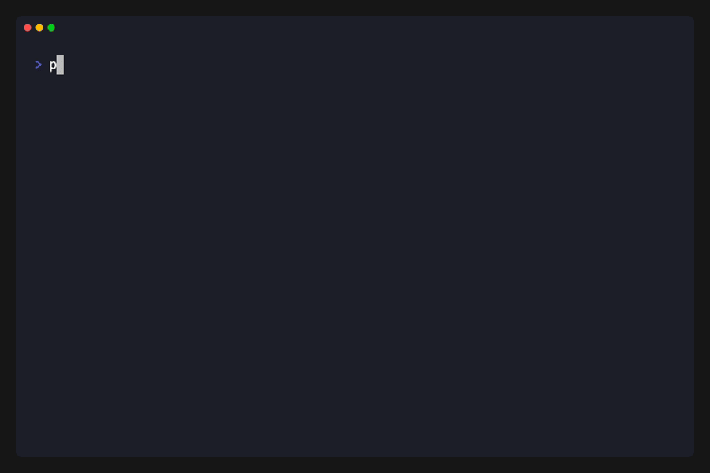

escpod summary¶
Generate a comprehensive summary of POD5 file(s) including read statistics, QC metrics, and run metadata.

Usage¶
escpod summary <INPUT> [--json]
Arguments¶
| Argument | Description |
|---|---|
<INPUT> |
Input POD5 file or directory containing POD5 files |
Options¶
| Option | Description |
|---|---|
--json |
Output as JSON instead of formatted table |
-h, --help |
Print help |
Features¶
- Directory Support: Point to a directory and automatically process all
*.pod5files recursively - Read Statistics: N50, mean, median read lengths with distribution sparkline
- Run Metadata: Flow cell, sequencing kit, sample ID, protocol info
- QC Metrics: Active channel count, well distribution, end reason breakdown
- Warnings: Alerts for old POD5 versions or corrupted files
Examples¶
Single File¶
escpod summary experiment.pod5
Directory of Files¶
escpod summary pod5_pass/
JSON Output¶
escpod summary experiment.pod5 --json
Output¶
Terminal Output¶
┌─────────────────────────────────────────────────────────────────────────────┐
│ POD5 Summary: experiment.pod5 │
├─────────────────────────────────────────────────────────────────────────────┤
│ 1.2 GB Size │ 10,543 Reads │ 4 kHz Rate │ 36.6 hrs Duration │
├─────────────────────────────────────────────────────────────────────────────┤
│ Flow Cell FAK12345 (FLO-MIN106) │ Kit SQK-LSK109 │
│ Sample sample_001 │ Protocol sequencing_MIN106_DNA │
│ Started 2024-01-15 10:30 UTC │ Software MinKNOW 23.04.5 │
├─────────────────────────────────────────────────────────────────────────────┤
│ READ LENGTH (samples) │
│ N50 65,000 │ Mean 50,000 │ Median 42,000 │ Range 1K-500K │
│ ▁▂▃▄▅▆▇█▇▆▅▄▃▂▁▁▁▁▁▁ length distribution │
├─────────────────────────────────────────────────────────────────────────────┤
│ CHANNELS 450/512 active (87.9%) │
├─────────────────────────────────────────────────────────────────────────────┤
│ END REASONS │
│ signal_positive ████████████████████ 80.6% ( 8,500) │
│ signal_negative ███░░░░░░░░░░░░░░░░░ 14.2% ( 1,500) │
│ mux_change █░░░░░░░░░░░░░░░░░░░ 3.8% ( 400) │
│ unblock_mux_change ░░░░░░░░░░░░░░░░░░░░ 1.4% ( 143) │
└─────────────────────────────────────────────────────────────────────────────┘
JSON Output¶
{
"files": [
{
"path": "experiment.pod5",
"size_bytes": 1288490188,
"read_count": 10543,
"batch_count": 11,
"pod5_version": "1.0",
"software": "MinKNOW",
"file_identifier": "abc123-def456"
}
],
"run_info": {
"acquisition_id": "abc123-def456",
"acquisition_start_time": "2024-01-15 10:30 UTC",
"sample_rate": 4000,
"flow_cell_id": "FAK12345",
"flow_cell_product_code": "FLO-MIN106",
"sequencing_kit": "SQK-LSK109",
"sample_id": "sample_001",
"experiment_name": "my_experiment",
"protocol_name": "sequencing_MIN106_DNA",
"software": "MinKNOW 23.04.5",
"system_name": "MinION",
"system_type": "Mk1C"
},
"statistics": {
"total_samples": 527150000,
"length_min": 1000,
"length_max": 500000,
"length_mean": 50000.0,
"length_median": 42000,
"length_n50": 65000,
"active_channels": 450,
"total_channels": 512
},
"end_reasons": {
"signal_positive": 8500,
"signal_negative": 1500,
"mux_change": 400,
"unblock_mux_change": 143
},
"warnings": []
}
Warnings¶
The command displays warnings for:
- Old POD5 versions: Files using an older POD5 format version
- Corrupted files: Files that cannot be opened or read
- Read errors: Individual reads that fail to parse
Example with warnings:
┌─────────────────────────────────────────────────────────────────────────────┐
│ POD5 Summary: pod5_pass/ (24 files) │
├─────────────────────────────────────────────────────────────────────────────┤
...
├─────────────────────────────────────────────────────────────────────────────┤
│ ⚠ WARNINGS │
│ 2 file(s) could not be read │
│ Corrupted/unreadable file: pod5_pass/bad_file.pod5 (Invalid signature) │
│ Old POD5 version: legacy.pod5 uses v0.3 (current: 1.0) │
└─────────────────────────────────────────────────────────────────────────────┘
Notes¶
- When processing a directory, all
*.pod5files are found recursively - Statistics are aggregated across all files
- Run info is taken from the first valid file
- Corrupted files are skipped with a warning, not fatal errors